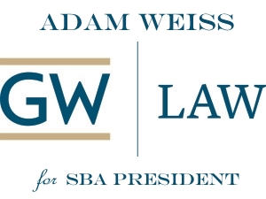

SBA & GW Law Experience


Summary
SBA: Executive Vice President, 1L Brandeis Senator
Authored: Executive Report re: Fall Election Bylaws & Vetoes, SBA Finance Policy
Lambda, SIPLA, AIPLA Quarterly Journal
SBA Executive Vice President (2015-2016)
SBA Senate – Currently oversee & administer the SBA Senate; this includes committee assignments, guidance, policy recommendations, procedural training, and administration
Executive Report re: Fall Election Bylaws & Vetoes – Authored a 27 page report on Fall Election scheduling Bylaws to resolve a conflict and surrounding confusion regarding the Fall Elections Schedule.
Budget Process – Coordinated the budget process at the beginning of the academic year and aided organizations as needed; coordinated financial officers and budget training
Ad-Hoc Policy Committee – Presently manage a cmte. founded to examine and identify potential policy changes and recommendations to eventually forward to the administration
ABA Conference – Represented GW Law at the ABA Annual Conference (Chicago, 2015)
Tenure & Promotion Committee – Student representative (1 of 4) tasked with interviewing faculty members under consideration for promotion and reporting student interests to the faculty
Outreach Initiative – Prompted the start of the SBA Member of the Week to encourage transparency and increase general knowledge of the SBA among the student body
Vice President – Duty to stand in as needed for George Soussou (SBA President)
Mentor – 3 Mentees
SBA Brandeis Senator (2014-2015)
Strategic Planning Committee – Selected to serve on a white paper cmte. to create a 5 – 10 year plan for SBA and the GW law community
Finance Committee Member – Supported orgs and advised them in financial requests.; sat on a board of 5 Senators to review financial requests and recommend actions to the Senate
Finance Policy – Due to the decentralized nature of our financial regulations, spearheaded the creation of, and eventually authored, a comprehensive Financial Policy for SBA. It incorporated any and all relevant bylaws, procedures, and/or legal requirements into one document as well as codified many of the guidelines the Finance Cmte had been using throughout the fiscal year. Additionally, this policy now acts as the de facto financial handbook for organizations, allowing them greater transparency into the financial request process and understanding of the rules.
Social Committee – Founded a social cmte for the Brandeis Inn responsible student cohesion. Events included Brandeis Day (see below), study sessions, and even community service (food packing).
Weekly Newsletter – Established the weekly newsletter for the Brandeis Inn, reporting on Inn specific news and members.
Justice Brandeis Day – Celebrated Brandeis’ birthday with trivia, a full size cut out, and rewards.
Office Hours – Held office/coffee hours for students with concerns.
Lambda Law
Lavender Law – Served on the delegation representing GW Law at Lavender Law (Annual LGBT Bar Association Conference) (Chicago, 2015)
Financial Consultation – Aided the executives in financial requests and documentation
Mentor
Student Intellectual Property Law Association (SIPLA)
Financial Consultation – Aided the executives in financial requests and documentation
Mentor
American Intellectual Property Law Association (AIPLA) Quarterly Journal
Editorial Staff Member